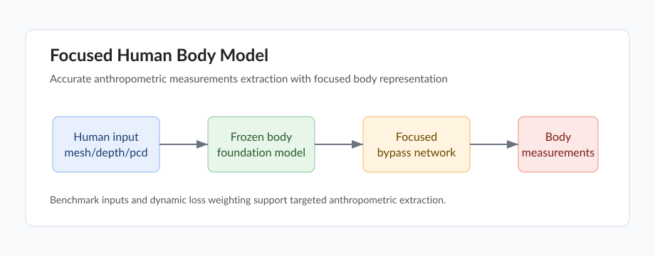

A Focused Human Body Model for Accurate Anthropometric Measurements Extraction
CVPR 2025, CCF-A
Shuhang Chen*, Xianliang Huang*, Zhizhou Zhong, Juhong Guan, Shuigeng Zhou
Paper PDF Code pending Video pending

Overview
This work builds a focused human body model for accurate anthropometric measurement extraction from human body inputs. It augments a frozen human body backbone with additional focused feature extraction and uses dynamic loss weighting to emphasize target body measurements.
Highlights
- Focused model design for accurate body measurement extraction.
- Bypass network based on CNN and ResNet modules on top of SMPLer-X.
- Dynamic loss weighting for targeted anthropometric parts.
- Multimodal benchmark with depth, point clouds, meshes, and measurements.
Citation
@inproceedings{chen2025focused,
title={A Focused Human Body Model for Accurate Anthropometric Measurements Extraction},
author={Chen, Shuhang and Huang, Xianliang and Zhong, Zhizhou and Guan, Juhong and Zhou, Shuigeng},
booktitle={Proceedings of the IEEE/CVF Conference on Computer Vision and Pattern Recognition},
pages={22658--22667},
year={2025}
}